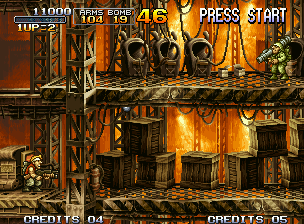
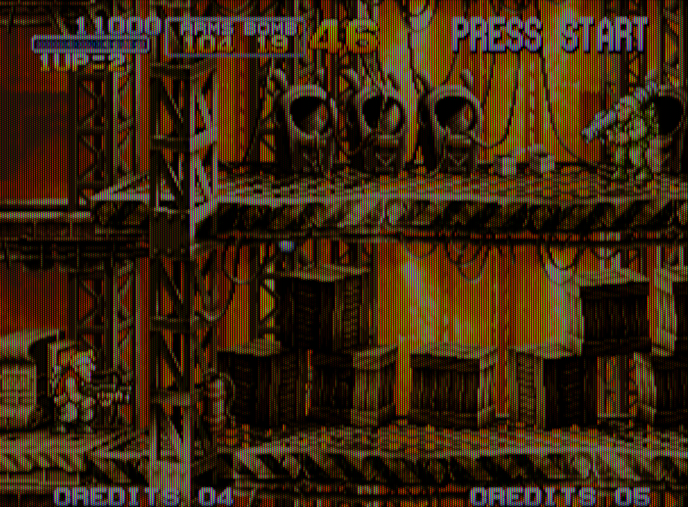
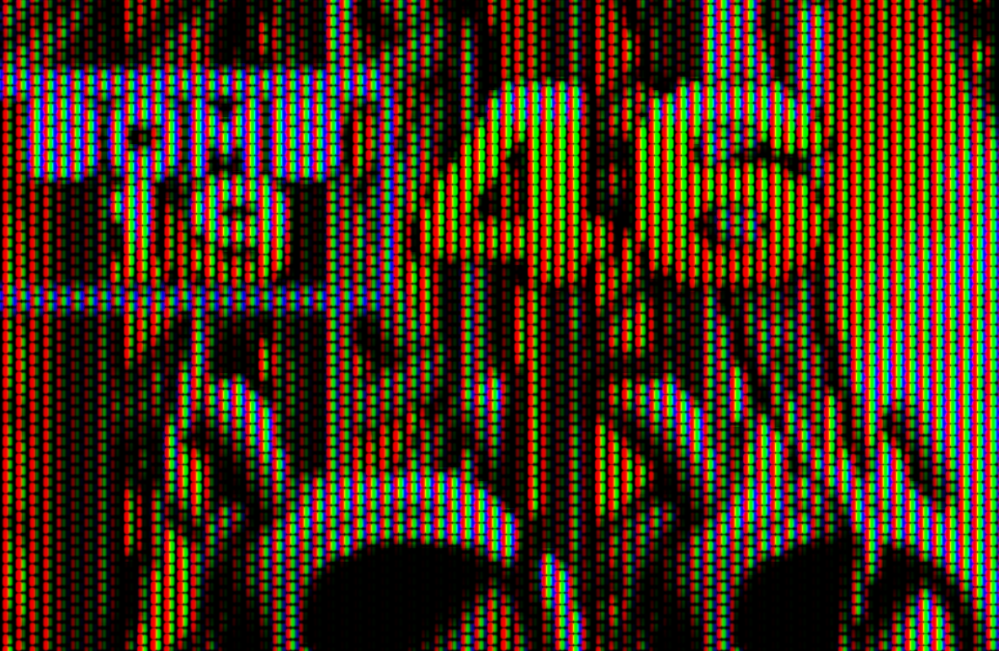
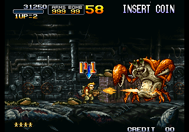
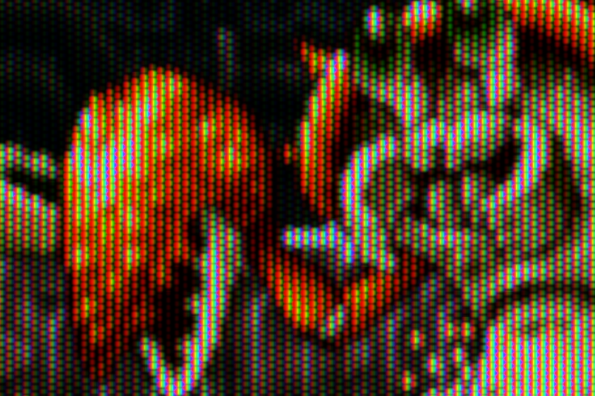
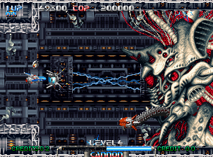
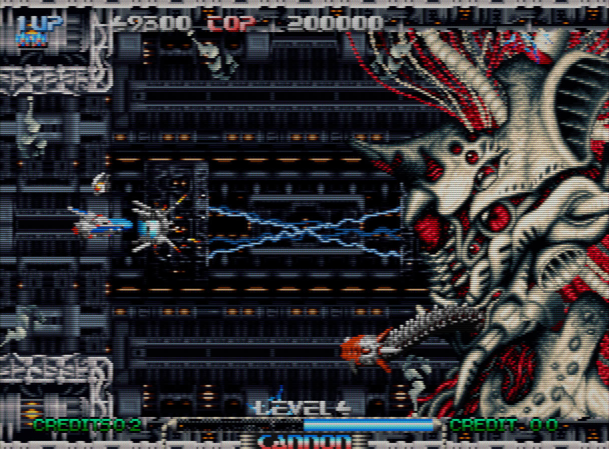
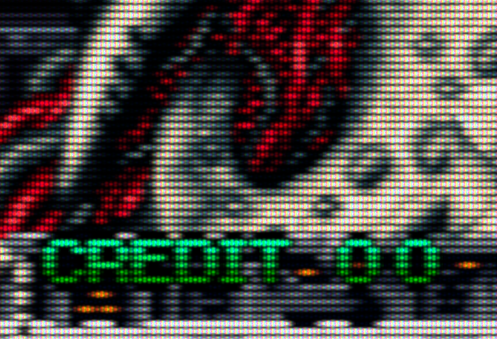
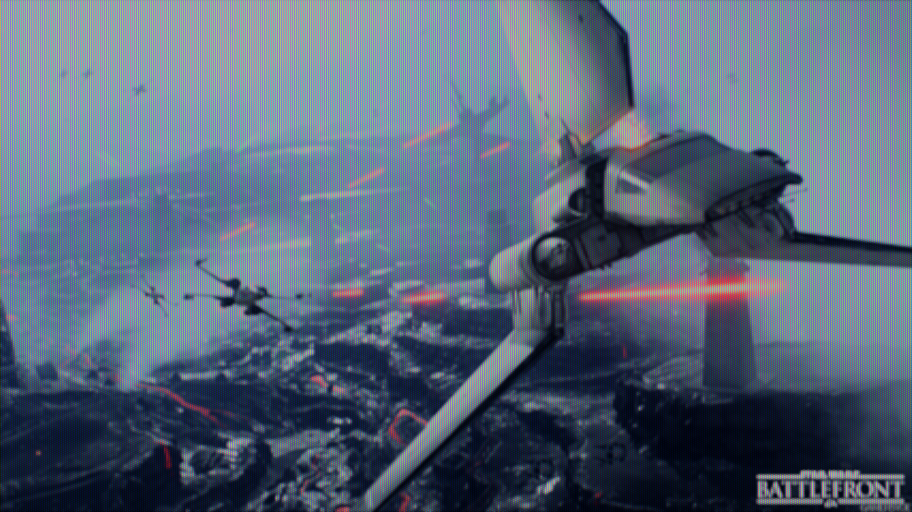
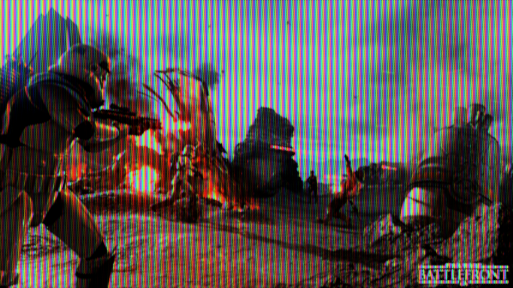

20150930 - Tonemapping and Slot Mask Simulation
This started a while back as a hobby project attempting to produce a better and more realistic non-real-time CRT simulation for print media such as the
The Bitmap Brothers: Universe book.
It ended with some interesting thoughts about tone-mapping and things which can be applied to real-time CRT simulation as well...
Tonemapping
CRT simulation for low-dynamic-range media is mostly a tonemapping and filtering problem.
A CRT has a large amount of black surrounding some very bright phosphors,
and even more black for vintage arcade monitors which scan only half the fields but at twice the rate.
The challenge: how to maintain overall image brightness and still relay the feel of scan lines and tiny phosphors. It is a challenging problem.
There are some common methods of tonemapping in games and film, which fail on this problem,
and a solution which might provide some insight on improving tonemapping for games and film.
The most common tonemapping method for games is to tonemap RGB channels individually.
This is one of core reasons a majority of games have serious color distortion in the darks (often over-saturation)
as the ratios of the color channels are not preserved.
The Dec 2014 version of ACES, which is commonly
referenced and applied for game engines has this problem.
Often the next evolution of this idea is to split tonemapping into separate operations for luma and chroma.
Typically the chroma is left alone with exception of the highlight compression area
where channel cross-talk is added (effectively a desaturation) so that brights over-expose to whites instead of clamping at pure primary and secondary hues.
Effectively RGB is converted to XYZ then to xyY, then Y (luma) is tonemapped, then xy (chroma) is pulled towards the white-point in areas of over-exposure.
This however suffers from a similar problem as tonemapping RGB channels individually.
While the chroma is preserved for a single pixel (better),
the extent to which the pixels brightness changes during tonemapping is a function of luma (bad).
Specifically luma is mostly effected by green, followed by a little red, and very little blue.
So two different pixels say one with only 0.25 of green, and one with only 0.25 of blue, get tonemapped very differently.
The blue hues fall off very quickly, the greens quite a bit later.
For CRT simulation this presents quite a problem, because often a source "pixel" is spread across
phosphors of pure primary color.
When tonemapping luma, the ratios of RGB are not preserved across the phosphor splats (multiple output pixels) which represent a source pixel.
This has a net result of making the darks look green as contrast is increased in the tonemapper.
The solution for CRT simulation tonemapping, is to instead tonemap max(R,G,B), then normalize RGB and scale to the tonemapped value.
This preserves RGB ratios across adjacent pixels representing phosphors of the same input pixel.
One aspect of CRT simulation tonemapping which does not apply to film or games, is that it is desirable with CRT simulation to avoid adding cross-talk on over-exposure.
This way the simulated phosphors maintain at pure hues.
Slot Sharpness vs Loss of Brightness
I built a CRT simulation shader which can enlarge an image 16x in each dimension.
Showing stills below up to 16x enlargement and what a zoomed out view would look like.
The CRT simulation shader for each enlarged pixel accumulates the effect from the 7 nearest slots per color channel across two scan lines.
There are controls for tonemapping (exposure, contrast, clipping), scan-line thickness, scan-line horizontal sharpness, slots per source pixel, slot fall-off (controls slot sharpness), slot vertical gap,
and something which can provide a magnification projection of part of the image per slot (hack).
The Metal Slug image example below shows roughly the limit of what can be done under an attempt to maintain slot sharpness at the expense of brightness.
The tonemapping is using roughly 4x increase in brightness to work around the slot mask, with 2x the contrast.
This tends to have a negative effect on the brights, squashing them.
Settings used in test app:
16 400 200 100 066 040 100 080 012 100


Seeing the full size image (below) shows exactly why there is no great solution here.
The extreme tonemapping tends to expand out the very bright phosphors,
while the less light ones maintain a most of the feel of an individual slot.
But the trade off is a lack of ability to maintain the contrast or brightness of the source image.

Slot Bleeding
This next selection of shots shows another compromise.
This time allowing the slots to bleed into each other increasing brightness.
To work around loosing the perception of slots, I increased the vertical gap between slots, to keep the perception at least of honeycomb layout of slot triplets.
This requires only a 3x increase in brightness, and drop to only 1.5x contrast in the tone-mapper.
I used the "magnification hack" setting to push the slots to be mostly filled or not filled.
Also increased the horizontal scan-line blur compared to the prior section.
Settings used in test app:
16 300 150 100 066 050 100 060 020 030


Visible Scan-Lines and the Importance Of Adaptive Highlight Compression
This time I believe the shot might be from some version of R-Type?
Switching to visible scan-lines requires an increase in the slot-mask density (or CRT resolution).
Slot mask is almost non-visible in the zoomed out shot.
This example also allows some highlight clipping in the tone-mapping step,
which can grab back some brightness and dynamic range.
When a large amount of highlight tonality is reserved for large dynamic range which is never used,
the result tends to be a reduction of contrast or squashing of the highlights.
This suggests for games it is very important to smoothly dynamically adaptively adjust the highlight part of the tonal curve at run-time.
Settings used in test app:
16 300 150 030 025 060 160 040 030 100



Estimating What Modern Games Would Look Like on Vintage CRTs
Just for fun I tried running some Star Wars Battlefront press screen shots through the filter.
Certainly no major game would ever ship with a CRT filter like this,
but I actually prefer the dropped resolution and slot mask as a way to hide the perfection of high-resolution GPU real-time renderings.
The result is certainly way less sharp, but effective super-sampling would still allow for effective aiming (fractional pixel movement changes pixel gradient).
Also in my case, the lack of information enables the mind to fill in the gaps resulting in a more believable scene.


{kind=link}
{kind=link}
{kind=link}
{kind=link}
{kind=link}
{kind=link}
{kind=link}
{kind=link}